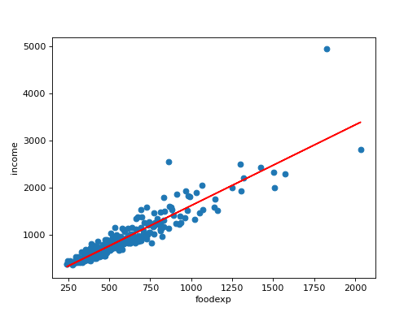

statsmodels.graphics.gofplots.qqline¶
-
statsmodels.graphics.gofplots.qqline(ax, line, x=None, y=None, dist=None, fmt='r-')[source]¶ Plot a reference line for a qqplot.
- Parameters
ax (matplotlib axes instance) – The axes on which to plot the line
line (str {'45','r','s','q'}) –
Options for the reference line to which the data is compared.:
‘45’ - 45-degree line
- ’s‘ - standardized line, the expected order statistics are scaled by
the standard deviation of the given sample and have the mean added to them
’r’ - A regression line is fit
’q’ - A line is fit through the quartiles.
None - By default no reference line is added to the plot.
x (array) – X data for plot. Not needed if line is ‘45’.
y (array) – Y data for plot. Not needed if line is ‘45’.
dist (scipy.stats.distribution) – A scipy.stats distribution, needed if line is ‘q’.
Notes
There is no return value. The line is plotted on the given ax.
Examples
Import the food expenditure dataset. Plot annual food expendeture on x-axis and household income on y-axis. Use qqline to add regression line into the plot.
>>> import statsmodels.api as sm >>> import numpy as np >>> import matplotlib.pyplot as plt >>> from statsmodels.graphics.gofplots import qqline
>>> foodexp = sm.datasets.engel.load(as_pandas=False) >>> x = foodexp.exog >>> y = foodexp.endog >>> ax = plt.subplot(111) >>> plt.scatter(x, y) >>> ax.set_xlabel(foodexp.exog_name[0]) >>> ax.set_ylabel(foodexp.endog_name) >>> qqline(ax, 'r', x, y) >>> plt.show()
(Source code, png, hires.png, pdf)

{kind=link}
{kind=link}